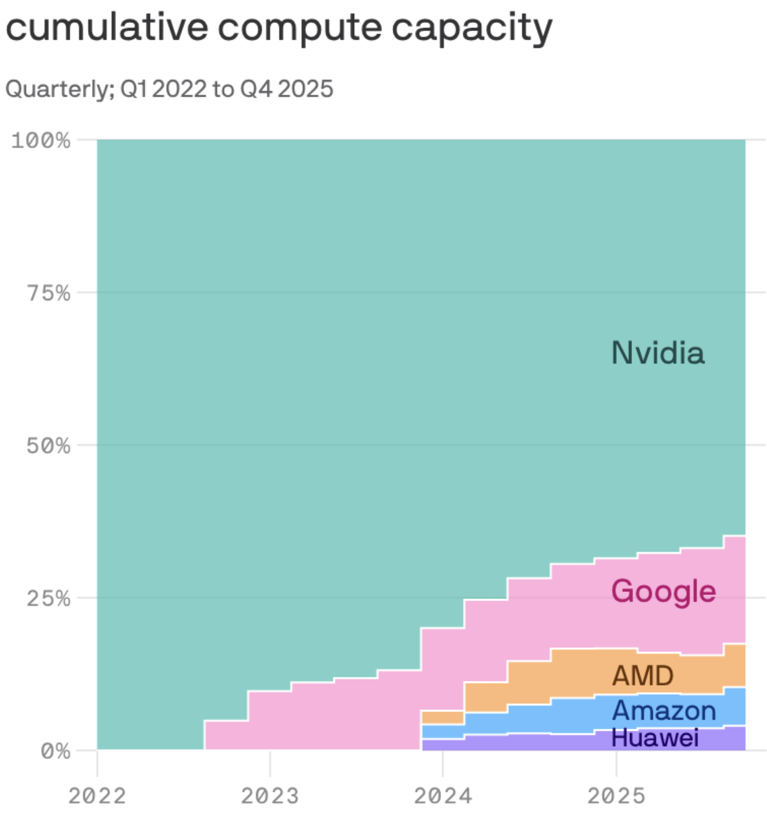

What Nvidia's Compute Dominance Means for Ukubona LLC

Figure 1: Cumulative compute capacity (Q1 2022 to Q4 2025)
Strategic Context: Ukubona LLC specializes in Health Tech for customized care, specifically building Personalized Risk Models and running counterfactual simulations to rehearse high-stakes clinical decisions. As a vendor for institutions like Johns Hopkins Enterprise, processing complex multivariable regressions at scale is core to your infrastructure.
1. The Cost & Capabilities of Counterfactual Simulations
The chart illustrates Nvidia's overwhelming and sustained monopoly on cumulative AI compute capacity. For Ukubona LLC, running "what if" counterfactual simulations when real data is missing requires significant computational horsepower.
- The Opportunity: The absolute scale of available compute is growing exponentially. This guarantees that Ukubona's vision of deep, data-heavy healthcare simulations won't be constrained by a fundamental lack of global compute capacity. You can safely build heavier, more predictive models.
- The Risk: Nvidia's dominance means they dictate pricing. As long as health-tech AI is highly dependent on Nvidia's CUDA ecosystem, compute-intensive tasks will carry a hardware premium.
2. Cloud Infrastructure & Vendor Strategy
Ukubona builds "lightweight stacks for continuity designed to integrate, not replace." However, the backend models must live somewhere. The chart shows competitors like Google, AMD, Amazon, and Huawei scrambling for minority shares of the compute pie.
- If Ukubona utilizes AWS (Amazon) or GCP (Google) for its backend infrastructure, access to top-tier scaling is gated by these providers' ability to secure Nvidia chips or force adoption of their own proprietary silicon (like Google TPUs or Amazon Inferentia).
- Actionable takeaway: To maintain margins and deployment flexibility across diverse hospital networks, Ukubona's multivariable regression pipelines should ideally be hardware-agnostic. Being able to leverage AMD or native cloud compute could serve as a vital hedge against Nvidia-driven cloud costs.
3. Scaling the "Game of Care"
Your Game of Care simulates decision pathways for patients, clinicians, and payers. To make this instantaneous and seamless in a clinical workflow, low latency is critical. Nvidia's massive rollout of compute capacity makes real-time, high-stakes edge computing in hospitals increasingly viable. This hardware foundation supports Ukubona's promise of 15+ years of NIH-funded research translated into fast, reliable software at the point of care.
Bottom Line
Nvidia is effectively building the "roads" that Ukubona LLC's "vehicles" (risk models and simulations) will drive on. The exponential growth of these roads means your software can scale massively. However, Nvidia's near-total ownership of the toll booths means Ukubona must carefully optimize its model efficiency to protect its bottom line as it scales into major enterprise deployments.